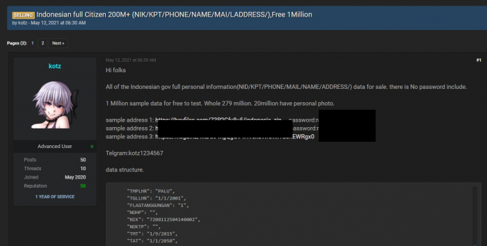

We are Humanoid
Member :
M. Alfarezha R. HI. Husain (07352311117)
M. Adib Aliffathan (07352311149)
M. Irsyad S.y (07352311150)
Fadlan M.Tahir (07352311143)
Oleh: Kelompok Humanoid
Di era digital saat ini, teknologi informasi berkembang dengan sangat cepat dan telah mengubah hampir seluruh aspek kehidupan manusia. Mulai dari komunikasi sehari-hari, aktivitas belajar-mengajar, layanan kesehatan, transaksi perbankan, hingga gaya berbelanja—semuanya kini telah berpindah ke ranah digital. Akses terhadap internet dan penggunaan perangkat pintar telah menjadi kebutuhan primer, tak hanya di kota besar tetapi juga merambah ke pelosok-pelosok daerah. Kehidupan manusia semakin terkoneksi dan terdigitalisasi.
Transformasi digital ini membawa dampak positif yang luar biasa. Proses menjadi lebih efisien, biaya operasional dapat ditekan, dan layanan publik bisa diakses dengan lebih cepat dan mudah. Misalnya, dengan hanya beberapa klik, seseorang bisa memesan makanan, melakukan pembayaran, mengakses catatan medis, hingga berkomunikasi dengan kerabat di belahan dunia lain. Dunia menjadi terasa lebih kecil, lebih cepat, dan lebih praktis.
Namun, di balik semua kemudahan dan kenyamanan tersebut, tersimpan persoalan besar yang kerap diabaikan: keamanan data pribadi dan hak atas privasi individu. Setiap aktivitas digital yang kita lakukan meninggalkan jejak data—dari lokasi yang kita kunjungi, kebiasaan berbelanja, preferensi tontonan, hingga percakapan pribadi. Data-data ini, meskipun terlihat sepele, dapat digunakan untuk membentuk profil digital seseorang yang sangat rinci.
Masalah muncul ketika data pribadi tersebut tidak dikelola dengan baik, disalahgunakan, atau bahkan dijual kepada pihak ketiga tanpa sepengetahuan dan persetujuan pemilik data. Dalam konteks inilah privasi menjadi isu yang sangat krusial di era digital. Ketika kontrol atas data pribadi berpindah tangan tanpa transparansi, maka hak asasi manusia pun ikut terancam.
Karena itu, memahami isu privasi digital bukan lagi menjadi tanggung jawab teknisi atau pakar keamanan siber semata, melainkan kewajiban seluruh masyarakat digital. Dengan meningkatnya kasus kebocoran data dan kejahatan siber yang menyasar informasi pribadi, penting bagi kita untuk lebih waspada, lebih sadar, dan lebih terlibat dalam menjaga hak atas privasi kita sendiri.
Pelanggaran privasi adalah tindakan mengambil, menyebarkan, atau menggunakan informasi pribadi seseorang tanpa izin atau persetujuan yang sah. Dalam konteks dunia digital, pelanggaran ini sering terjadi melalui aktivitas online, seperti peretasan akun, pencurian data pribadi, atau distribusi informasi sensitif tanpa sepengetahuan pemiliknya.
Contoh umum dari pelanggaran privasi antara lain adalah pencurian identitas, di mana pelaku menggunakan data pribadi korban—seperti nomor identitas, alamat, atau informasi keuangan—untuk melakukan penipuan. Bentuk lain adalah penyadapan komunikasi pribadi, baik itu email, pesan singkat, hingga panggilan telepon, yang dilakukan tanpa persetujuan. Bahkan penyebaran foto atau video pribadi di media sosial tanpa izin juga termasuk ke dalam kategori pelanggaran privasi.
“Privasi bukan hanya soal rahasia, tapi tentang bagaimana informasi kita dikendalikan.” – Solove (2006)
Salah satu kasus pelanggaran privasi yang menonjol di Indonesia adalah kebocoran data peserta BPJS Kesehatan yang terjadi pada Mei 2021. Data yang bocor dikabarkan berjumlah sekitar 279 juta data penduduk, termasuk informasi sensitif seperti NIK, nama lengkap, alamat, nomor telepon, hingga data kependudukan lainnya. Data tersebut bahkan diperjualbelikan di forum gelap (dark web) oleh akun anonim bernama “Kotz”.
Gambar 3.1 Pelanggaran Privasi di Indonesia
Investigasi menunjukkan bahwa sistem keamanan digital yang digunakan belum memadai, serta tidak adanya transparansi kepada masyarakat terkait cara pengumpulan dan perlindungan data. Hal ini mencerminkan lemahnya implementasi prinsip-prinsip perlindungan data pribadi di institusi publik.
Pelanggaran privasi dapat terjadi karena berbagai alasan:
Untuk menanggapi tantangan perlindungan data pribadi di era digital, Indonesia telah mengesahkan Undang-Undang Nomor 27 Tahun 2022 tentang Perlindungan Data Pribadi (UU PDP). Undang-undang ini menjadi landasan hukum utama dalam menjaga hak individu atas privasi dan data pribadi mereka. UU PDP mengatur secara rinci mengenai definisi data pribadi, hak subjek data, kewajiban pengendali dan prosesor data, serta sanksi administratif dan pidana bagi pelanggar.
Salah satu poin penting dari UU ini adalah penegasan tanggung jawab pengendali data, yakni pihak yang menentukan tujuan dan cara pemrosesan data pribadi. Mereka wajib menjaga keamanan data yang dikumpulkan dan tidak boleh menyalahgunakannya. Selain itu, UU PDP juga mewajibkan adanya persetujuan eksplisit dari pemilik data sebelum data dikumpulkan atau digunakan, sehingga transparansi dan kontrol atas data menjadi hak mutlak individu.
Dengan hadirnya regulasi ini, Indonesia selangkah lebih maju dalam menyesuaikan diri dengan standar perlindungan data global, sekaligus memberikan perlindungan hukum yang lebih kuat bagi warganya di ranah digital.
Dunia digital memberikan kemudahan luar biasa dalam komunikasi, transaksi, hingga akses informasi. Namun, di balik semua kemudahan itu tersembunyi potensi ancaman terhadap privasi dan keamanan data pribadi. Oleh karena itu, kesadaran individu, kebijakan hukum yang kuat, serta kebiasaan digital yang aman menjadi tiga pilar penting dalam menjaga privasi kita di ruang siber.
Dengan menerapkan langkah-langkah perlindungan yang tepat dan mematuhi regulasi yang berlaku, kita tidak hanya melindungi diri sendiri, tetapi juga turut menciptakan ekosistem digital yang lebih aman dan tepercaya bagi semua pihak. Ingatlah, privasi adalah hak fundamental yang patut kita jaga bersama.